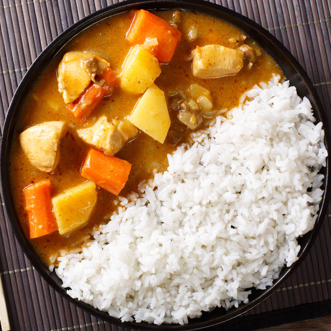

Home
Curry rice recipe

Curry rice is a flavorful and comforting dish made by simmering rice with a fragrant curry sauce, often paired with vegetables, chicken, or chickpeas. It's easy to prepare and perfect for a cozy meal, whether for lunch, dinner, or meal prep.
Despite its simplicity, curry rice packs bold flavors with a rich, aromatic sauce and tender rice, making it a satisfying dish that's perfect for any occasion.
Ingredients:
- 1 cup uncooked rice (white or basmati)
- 1 tablespoon oil or butter
- 1 small onion, chopped
- 1 garlic clove, minced
- 1 tablespoon curry powder
- 1 ½ cups cooked chicken or chickpeas (for vegetarian)
- 1 cup vegetables (like carrots, peas, or bell peppers)
- 1 ½ cups coconut milk or broth
- Salt and pepper to taste
- Fresh cilantro (optional, for garnish)
Steps :
- Cook rice according to package instructions and set aside.
- In a pan, heat oil and sauté onion and garlic for 2 minutes.
- Stir in curry powder, then add chicken (or chickpeas) and vegetables.
- Pour in coconut milk or broth, season, and simmer for 8–10 minutes.
- Serve the curry over rice and garnish with fresh cilantro if desired.